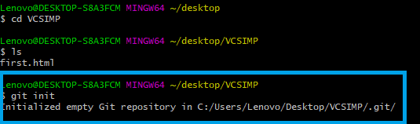

This documentation includes how to create or set a new repository, how to push data in a repository, how to clone a repository.

After creating the repository on your github account we start initializing our repository by using git init command.
Here I use GIT INIT command to initialize the local directory as a git repository, GIT INIT command creates a new repository and also initializes the new and empty repository. This is the first command you will run in the new project.

Next I used this command to add all the files to the folder. The git add command adds files to the staging area. Files in the staging area are those that you want to add to your next commit, changes are not actually recorded untill you run commit.
After using git status command i will now see all the files that i have stage for commit.It shows the state between the git add and git commit command. The git status command displays the state of repository and staging area, it allow us to see the tracked, untracked files and changes.